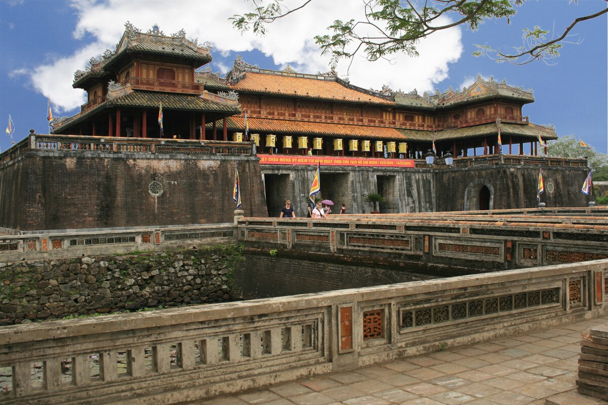
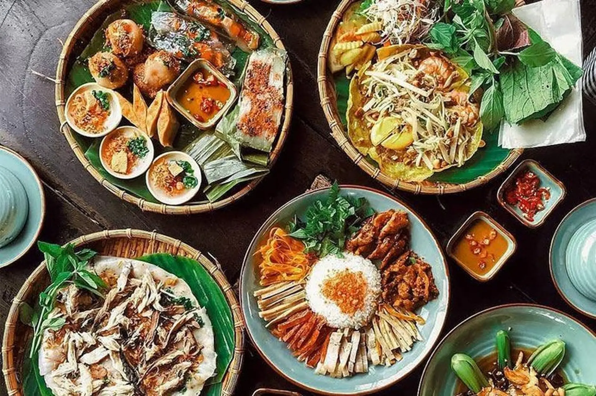
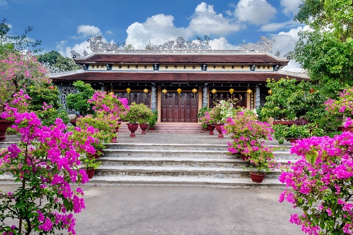
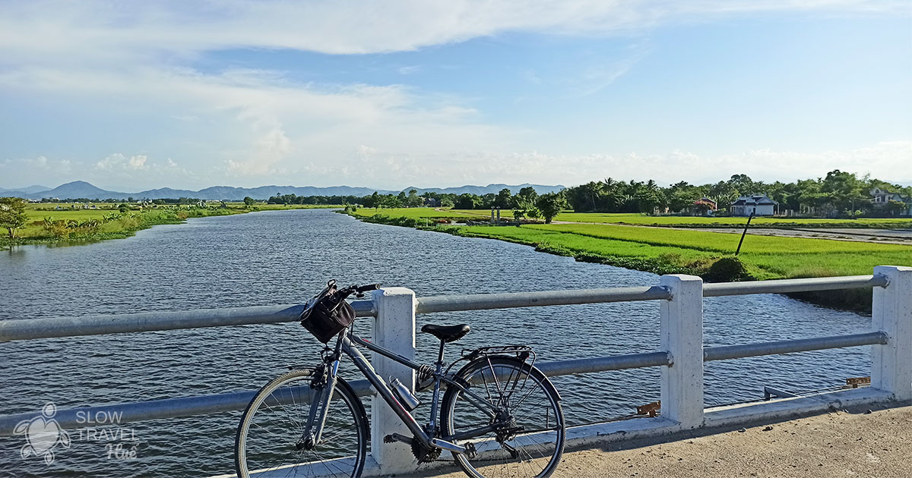
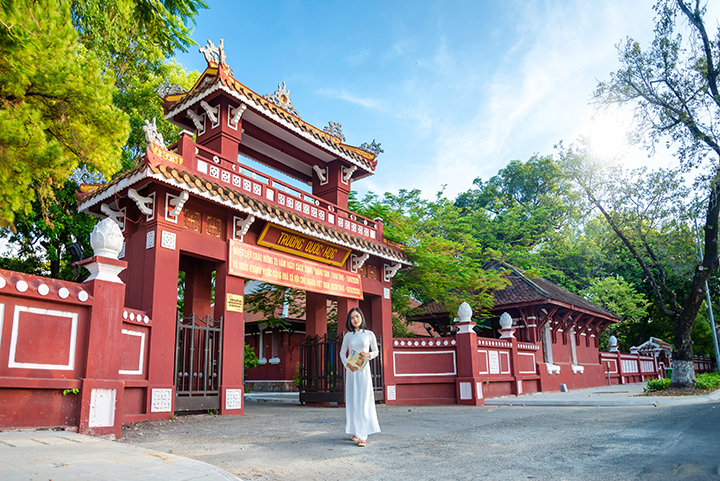
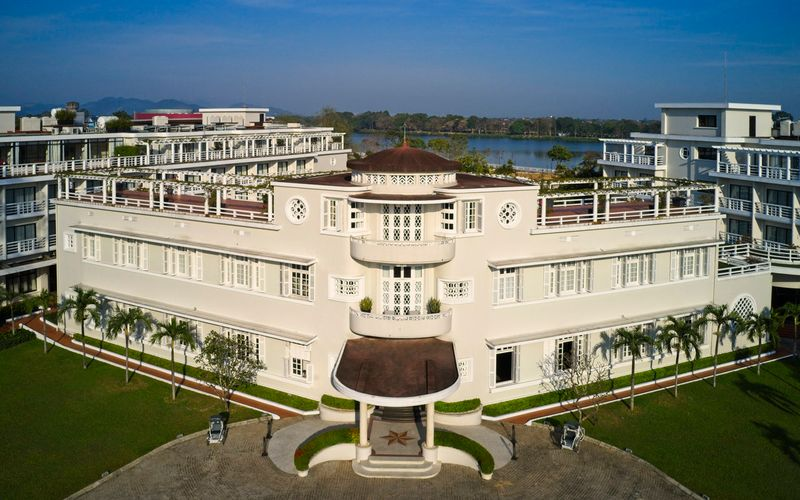

HUẾ
Huế là thành phố ngập tràn câu chuyện. Các vị vua triều Nguyễn đã xây dựng kinh đô phong kiến của mình dọc theo bờ sông màu mỡ và trên những ngọn đồi xanh mướt, nhưng di sản cung đình chỉ là một trong nhiều lý do để ghé thăm nơi đây. Ẩm thực tinh tế của Huế đã trở thành huyền thoại, trong khi những con phố rợp bóng cây lại điểm xuyết các ngôi chùa rêu phong, biệt thự Art Deco và những khu chợ rực rỡ sắc màu. Xuyên suốt bức tranh ấy là dòng sông Hương, chậm rãi trôi và mang nhịp sống thong dong cho cả thành phố.

Những điều nên làm ở Huế
Khám phá Việt Nam thời phong kiến
Hãy tìm hiểu về triều đại hoàng gia cuối cùng của Việt Nam qua những công trình còn sót lại sau 143 năm trị vì. Lang thang trong các cung điện, đình tạ và nhà hát của Hoàng thành Huế, đồng thời ghé thăm lăng mộ các vị vua Tự Đức, Minh Mạng và Khải Định.
Thưởng thức ẩm thực độc đáo
Ở Huế, bạn sẽ chẳng bao giờ cách xa một bữa ăn đẳng cấp. Hãy ghé chợ Đông Ba để thưởng thức nguồn thực phẩm tươi ngon và mở đầu cho hành trình ẩm thực bằng các món ăn vặt trứ danh như bánh khoái và bánh bèo.

Khám phá cội nguồn Phật giáo
Bầu không khí tĩnh lặng của Huế hiện rõ nhất ở các ngôi chùa và tu viện. Ghé thăm chùa Thiên Mụ với tháp Phước Duyên bảy tầng biểu tượng, sau đó đến tu viện Từ Hiếu – nơi thiền sư Thích Nhất Hạnh từng tu học thời niên thiếu.

Đạp xe giữa đồng lúa
Những con phố duyên dáng và vùng quê trù phú của Huế là thiên đường cho những ai thích đạp xe thư giãn. Hành trình đến cầu ngói Thanh Toàn là một trong những tuyến đường đẹp nhất, dẫn qua vườn rau, cầu gỗ nhỏ và đàn vịt thong dong.

Ngược dòng lịch sử thuộc địa
Những du khách yêu kiến trúc sẽ thích thú khi khám phá dấu ấn Pháp còn lưu lại ở Huế. Dạo bước trên đường Lê Lợi để chiêm ngưỡng nét Art Deco của khách sạn La Residence, và những tòa nhà gạch đỏ uy nghi của trường Quốc Học.


Thời tiết Huế
Mùa xuân, từ tháng 2 đến cuối tháng 4, là thời điểm Huế đẹp nhất. Tháng 6 và 7 trời nắng gắt, nhiệt độ và độ ẩm đều cao. Mùa mưa bắt đầu từ tháng 8 và kéo dài đến tháng 1 năm sau. Lưu ý rằng Huế thường xảy ra ngập lụt, nhất là từ tháng 10 trở đi.
Di chuyển ở Huế
Các chuyến bay nội địa từ Hà Nội và TP. Hồ Chí Minh đáp xuống sân bay Phú Bài, cách trung tâm thành phố 30 phút đi ô tô. Du khách cũng có thể đến Huế bằng tàu hỏa tuyến Thống Nhất, xe buýt đường dài, hoặc thuê xe riêng từ sân bay quốc tế Đà Nẵng, cách đó 2 giờ chạy xe. Để tham quan Hoàng thành, bờ sông và khu trung tâm, bạn có thể đi bộ hoặc thuê xích lô nguyên ngày. Nếu muốn đến các lăng vua, có thể đi taxi hoặc thuê xe đạp.